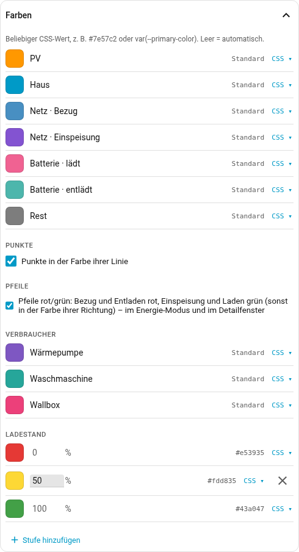
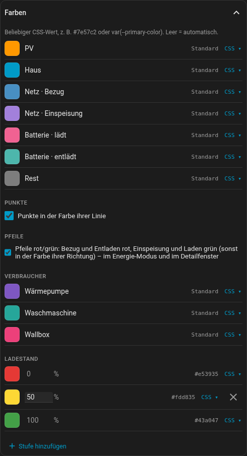

Farben und Aussehen
Alle Farben der Karte stehen im Editor unter Farben: die sieben Knoten, die
Zusatzwerte (eine Zeile je eingerichtetem Wert), eine Zeile je Verbraucher und
die Stufen des Ladezustands-Verlaufs. Jede Zeile zeigt links die Farbe, die die
Karte gerade malt, und rechts den konfigurierten Wert — Standard, solange
keiner gesetzt ist.

Ein Klick auf das Farbfeld öffnet den Farbwähler: eine Fläche für Sättigung und Helligkeit über einem Streifen für den Farbton, darunter der Wert als Hex oder, umgeschaltet, als Schieberegler für RGB beziehungsweise HSL. Daneben liegen die Farben, die in dieser Karte schon vorkommen — ein Klick, und zwei Klimageräte bekommen wirklich dasselbe Blau statt zwei ähnlicher.
CSS ▾ klappt ein Textfeld aus. Das ist der Weg für alles, was kein Hex-Wert
ist: var(--primary-color) bleibt so an das Theme gebunden, statt auf einen
festen Wert eingefroren zu werden. Genau dafür ist das Feld geblieben — ein
Farbwähler allein kann nur #rrggbb.
Die Farbe eines Verbrauchers steht damit nicht mehr in seiner Karteikarte, sondern hier. Zwei Orte für dieselbe Einstellung wären einer zu viel.
Beim Ladezustands-Verlauf sind die Enden festgenagelt: Bei 0 % und 100 % lässt sich die Farbe ändern, der Prozentwert nicht, und entfernen lassen sie sich auch nicht — die Karte weist einen Verlauf zurück, der nicht über die ganze Skala läuft. Stufen dazwischen lassen sich verschieben, hinzufügen und löschen, solange zwei übrig bleiben.
Die Standardwerte kommen aus den Energie-Theme-Variablen von Home Assistant, sodass die Karte ohne Konfiguration zum Energie-Dashboard passt. Wer stattdessen nach gut und schlecht färben will:
colors:
grid_export: "#43a047" # Einspeisen ist gut
grid_import: "#e53935" # Beziehen nicht
battery_charge: "#43a047"
battery_discharge: "#e53935"Die Pfeile an Netz und Batterie sind von sich aus schon rot und grün: rot für
Bezug und Entladen, grün für Einspeisen und Laden, in den Farben des Themes
(--error-color, --success-color). Wer sie lieber in der Farbe ihrer
Richtung hat, nimmt unter Farben → Pfeile den Haken heraus, in YAML
colors.arrows: direction.
Transparenter Hintergrund (card-mod)
Soll das Hintergrundbild des Dashboards durchscheinen, lässt sich die Karte mit card-mod durchsichtig machen (ab Kartenversion 0.8.2):
card_mod:
style: |
ha-card {
--ha-card-background: transparent;
background: none;
box-shadow: none;
border: none;
}Auf die erste Zeile kommt es an: Die vier Knoten sind mit der Hintergrundfarbe
der Karte gefüllt, und background: none allein lässt sie als volle Scheiben
stehen. Das klappt nur mit appearance: auto – bei light oder dark malt die
Karte ihren Hintergrund selbst, und dorthin reicht card-mod nicht.